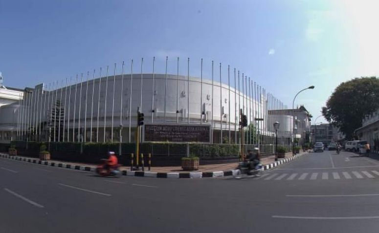
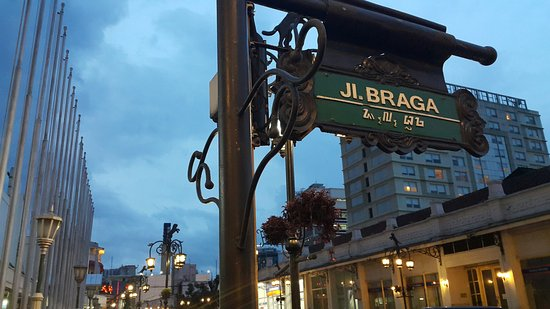

Asia Afrika, Kota Tua yang Terletak di Jantung Kota Bandung

Jalan Asia Afrika Bandung salah satu tempat wisata yang menarik untuk dikunjungi di pusat Kota Bandung. Bangunan Indich art deco dengan beragam desain dan kisah catatan sejarah bisa di telusuri di sepanjang Jalan Asia Afrika Bandung ini. Dari pengalaman Direktori Wisata Indonesia mengunjungi tempat wisata Bandung, kami mencoba menyusuri kawasan wisata yang berada di Jalan Asia Afrika Bandung. Bangunan megah dengan bentuk unik dan bersejarah, menjadi pusat perhatian bagi setiap wisatawan domestik maupun mancanegara yang melintas di tempat wisata pusat Kota Bandung ini. Bangunan yang dikenal sebagai salah tempat Konferensi Asia Afrika Bandung ini di kenal dengan
nama Gedung Merdeka.
Di lokasi ini terdapat banyak bangunan gedung bergaya Eropa. Konon, di kawasan Jalan Asia Afrika Bandung ini pada saat Pemerintah Hindia Belanda memutuskan untuk memindahkan pusat pemerintahan ke Kota Bandung dari Batavia tempo dulu, sejak itulah pemerintahan Hindia Belanda melakukan pembangunan besar-besaran di tempat daerah
Bandung, dimana pada saat itu gaya bangunan arsitektur Art Deco cukup populer pada masanya. Mungkin hal ini menjadi salah satu penyebab mengapa Kota Bandung dikenal dengan sebutan Paris Van Java.

Tepat di kawasan persimpangan Jalan Braga dan Jalan Asia Afrika kita dapat menemukan gedung bangunan tua yang masih berfungsi hingga saat sekarang. Museum Konferensi Asia Afrika yang menyatu dengan Gedung Merdeka salah satunya. Konon, gedung ini dikenal dengan nama Gedung Societeit Concordia, dikenal sebagai tempat berkumpulnya
masyarakat Kota Bandung untuk kalangan kelas atas. Namn, sekarang seiring berkembangnya jaman fungsinya pun telah berubah, karena pada tahun 1955 bangunan ini digunakan sebagai tempat pertemuan Koferensi Asia Afrika (KAA) yang dikenal dengan nama lain Konfernsi Bandung, dan pada tanggal 24 April 1980 bangunan ini diresmikan menjadi Museum Asia Afrika oleh Presiden Soeharto pada saat menjabat sebagai Presidan Republik Indonesia yang
ke-2.
Menurut informasi yang diterima oleh Direktori Wisata Indonesia, kawasan Jalan Asia Afrika Bandung sering dijadikan titik spot bagi para wisatawan lokal maupun mancanegara untuk mengabadikan foto-foto yang unik dan klasik. Tidak jarang banyak di antara mereka yang membuat sebuah cerita _lm pendek di tempat wisata sejarah Bandung ini dengan berlatar belakang Museum Asia Afrika Bandung.

Bila Yogyakarta memiliki Jalan Malioboro, maka Kota Bandung memiliki Jalan Braga yang berada dekat Jalan Asia Afrika Bandung. Kawasan ini dikenal sebagai tempat wisata yang menarik di sekitar Kota Bandung Banyak obyek wisata yang dapat dijakan tempat tongkrongan enak dan mengasyikan di kawasan ini. Bagi kita yang memiliki banyak kenangan indah di kawasan Braga, kita bisa mecba menelusuri kawasan ini kembali pada saat hadir di Kota Bandung.
Setelah kita melewati Gedung Merdeka , kita dapat menemukan sebuah Hotel Savoy Homan yang masih terlihat berdiri kokoh dan indah. Tidak jauh dari hotel Savoy kita pun akan menemukan sebuah bangunan Hotel Preanger, konon hotel ini merupakan hotel bersejarah pada zaman Kolonial Balanda. Tidak jauh dari lokasi kita akan menemukan sebuah bangunan Kantor Pikiran Rakyat yang merupakan kantor surat kabar yang sangat terkenal di Kota Bandung.
Setelah kita puas menyusri kawasan wisata di Jalan Asia Afrika Bandung dekat Kantor Pikiran Rakyat. Kita dapat mengunjungi sebuah tugu titik 0 kilometer yang letaknya di depan persis Kantor Dinas Pekerjaan Umum Kota Bandung. Tugu ini menjadi penanda titik tengah Kota Bandung. Stelah itu kita dapat menemukan sebuah gedung Kantor Pos yang masih aktif melayani jasa pos dan lokasinya berada di pinggi Jalan Asia Afrika Bandung.
Untuk mendapatkan informasi kegiatan wisata di Kota Bandung, kita dapat mendatangi Kantor Tourist Information Center, melalui tempat ini kita dapat mencari informasi kegiatan mengenai seputaran Kota Bandung seperti jadwal pertunjukan, kegiatan pariwisata yang mnarik di Bandung dan sekitarnya dan masih banyak lagi informasi yang bias kita dapatkan di tempat ini. Lokasinya di sebelah samping Masjid Agung Bandung dekat dengan Hotel Swarha yang berada di seberang persis Kantor Pos Bandung.
Wisata Di Jalan Asia Afrika Bandung dapat membuat kita terlena dengan waktu yang begitu cepat berjalan, banyak spot destinasi wisata yang cantik di kawasan Jalan Asia Afrika akan memanjakan kita dengan segudang informasi sejarah, seni desain arsitektur dengan pemandangan indahnya dan kuliner yang bisa kita dapatkan serta nikmati di area sekitar Jalan Asia Afrika Bandung.